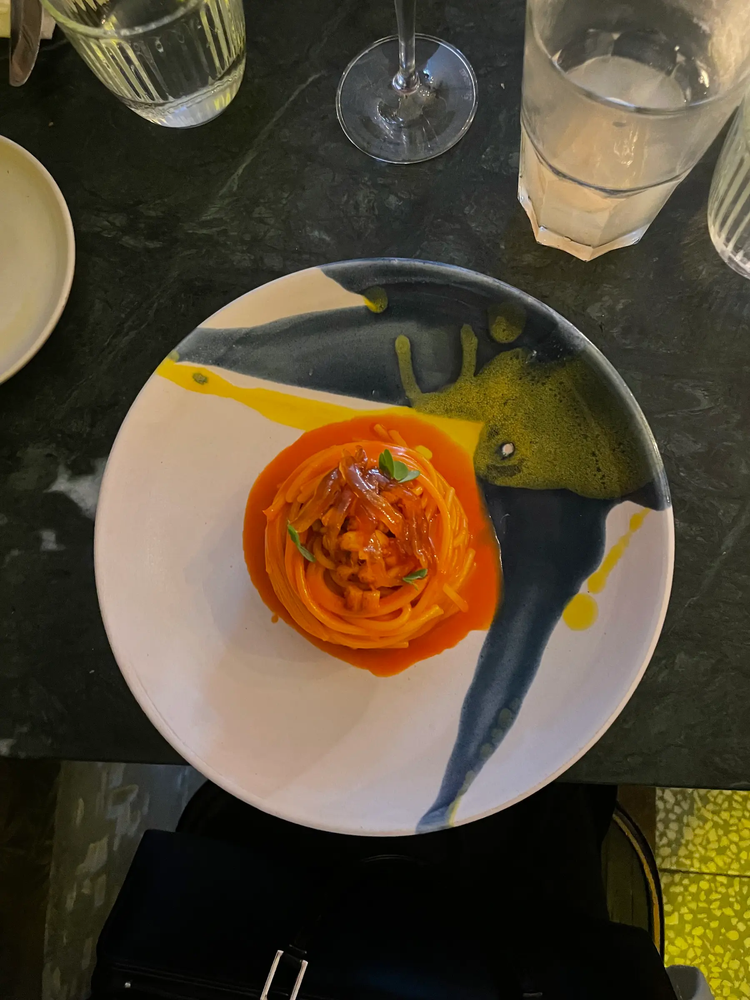

Vodka Pasta

Ingredients
- 300g pasta, fx. Rigatoni or penne
- 2 tbsp. butter
- 1 onion,finely chopped
- 2 garlic cloves, finely chopped
- 1 dl vodka
- 100g tomato purée
- 250 ml crean
- 30g parmesan cheese
- salt, pepper and chili flakes
- fresh parsley, chopped
Steps
- Boil water in a pot and cook your pasta.
- In a pan cook the onion and garlic with the butter until soft.
- Add the tomato purée, salt, pepper and chilli flakes, you want to cook the tomato purée until it becomes dark red.
- Add the vodka and cook for about a minute.
- Next add the cream and let it simmer for about 5 minutes until it turns creamier.
- Then add the boiled pasta and parmesan cheese and blend it all together.
- Top with fresh parsley and serve